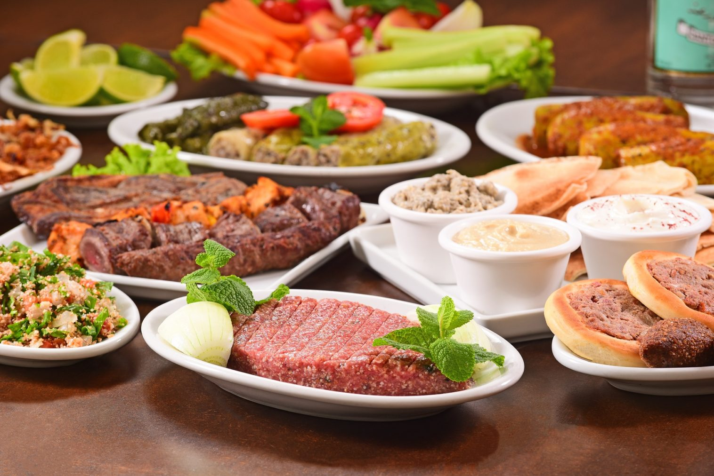
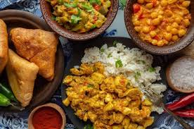
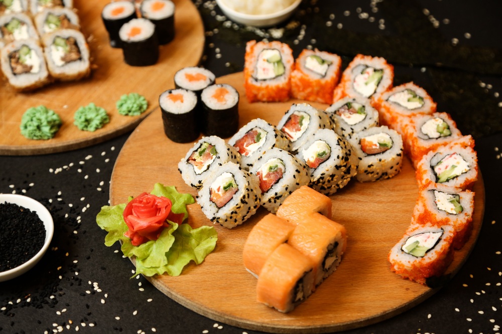
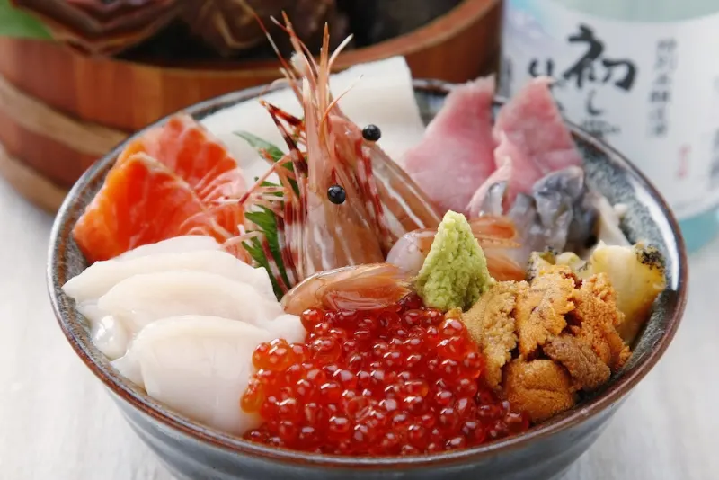
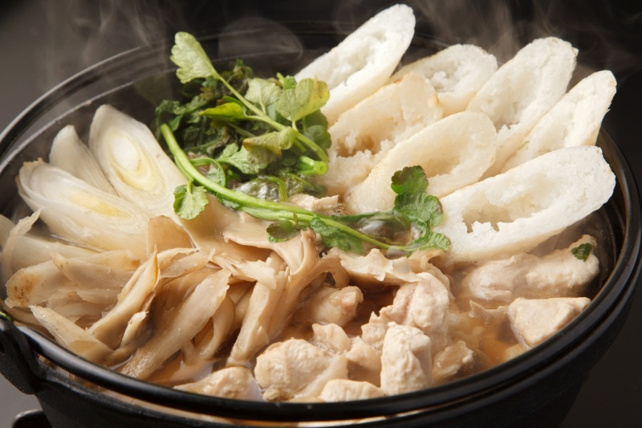
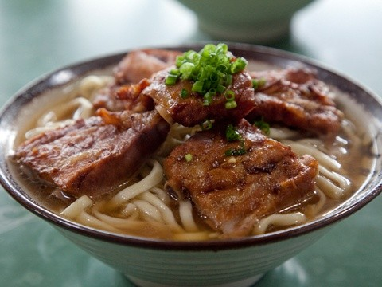
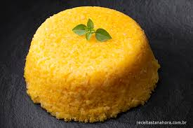
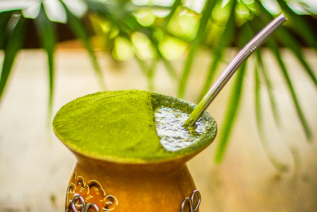
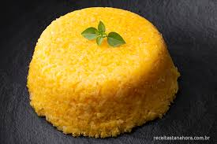
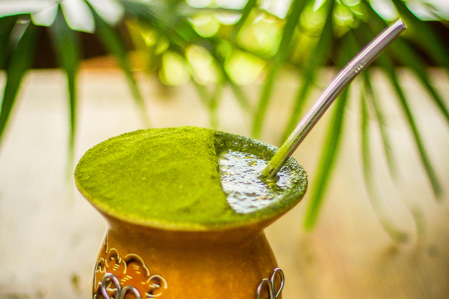

Bem-vindo ao Mundo dos Sabores, o seu portal para uma jornada gastronômica global! Aqui, celebramos a diversidade culinária de diferentes culturas, oferecendo uma visão fascinante dos sabores, ingredientes e técnicas que fazem cada cozinha única. Da vibrante comida de rua indiana aos sofisticados pratos brasileiros, passando pela rica comida japonesa, explore receitas, histórias e dicas sobre as tradições culinárias de todos os cantos do mundo. Prepare-se para expandir seus horizontes e descobrir como a comida pode ser um verdadeiro reflexo da história e das paixões de um povo. Embarque nessa viagem e venha saborear o mundo conosco!
- Comidas Árabes
A culinária árabe é rica e variada, destacando-se por unir famílias, acolher hóspedes e celebrar a vida. Com influências de vários países, ela é centrada em carnes, leite de cabra e camelo, e especiarias. Grãos são essenciais, como no hummus e falafel feitos de grão-de-bico, e doces com nozes, mel e essências florais. No Brasil, a culinária árabe chegou através da migração de árabes cristãos devido à perseguição otomana, tornando-se popular com pratos como esfiha, quibe e coalhada. A gastronomia árabe é apreciada globalmente por seus sabores distintos.
Aqui esta uma imagem das culinária árabe:

A história da comida indiana é tão rica e diversificada quanto a própria Índia. Com uma herança que remonta a milhares de anos, a culinária indiana reflete a diversidade cultural, geográfica e histórica do país. Aqui está um panorama geral da evolução da comida indiana e alguns exemplos de pratos típicos:


3




4
 



5
Texto
Topo
Trabalho informática.
Comidas típicas de cada localização.
Participantes:
-Pedro Teixeira
-Michel Nobre
-Rodrigo Schwery
-Nicolle Waterstradt